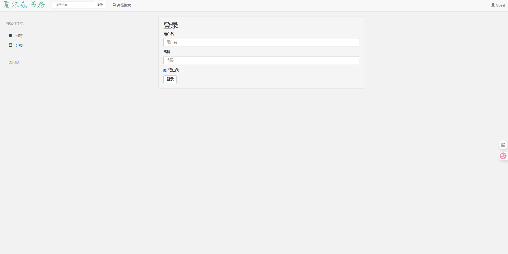
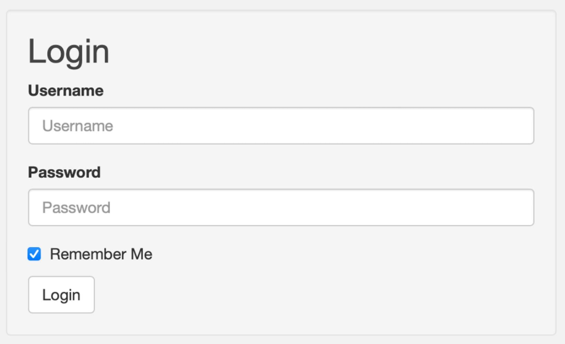
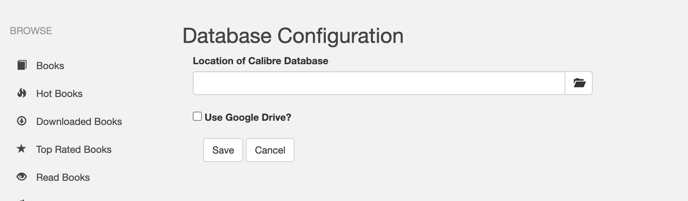
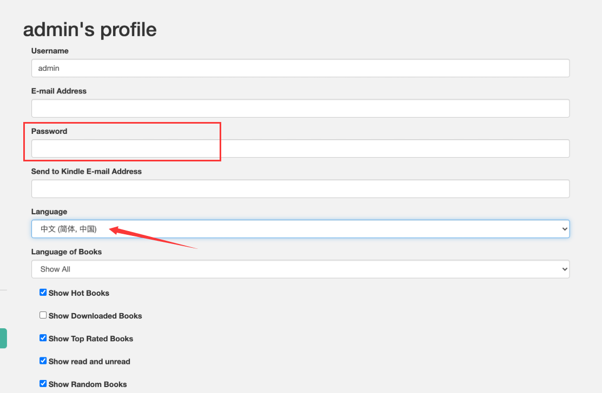
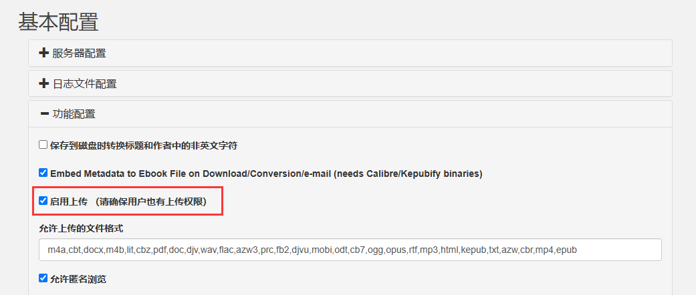
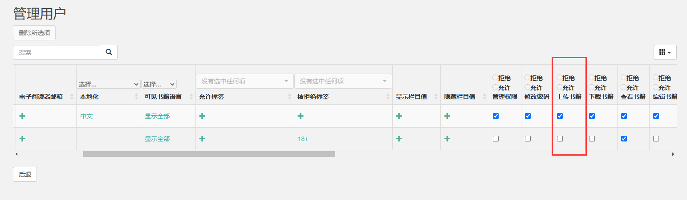
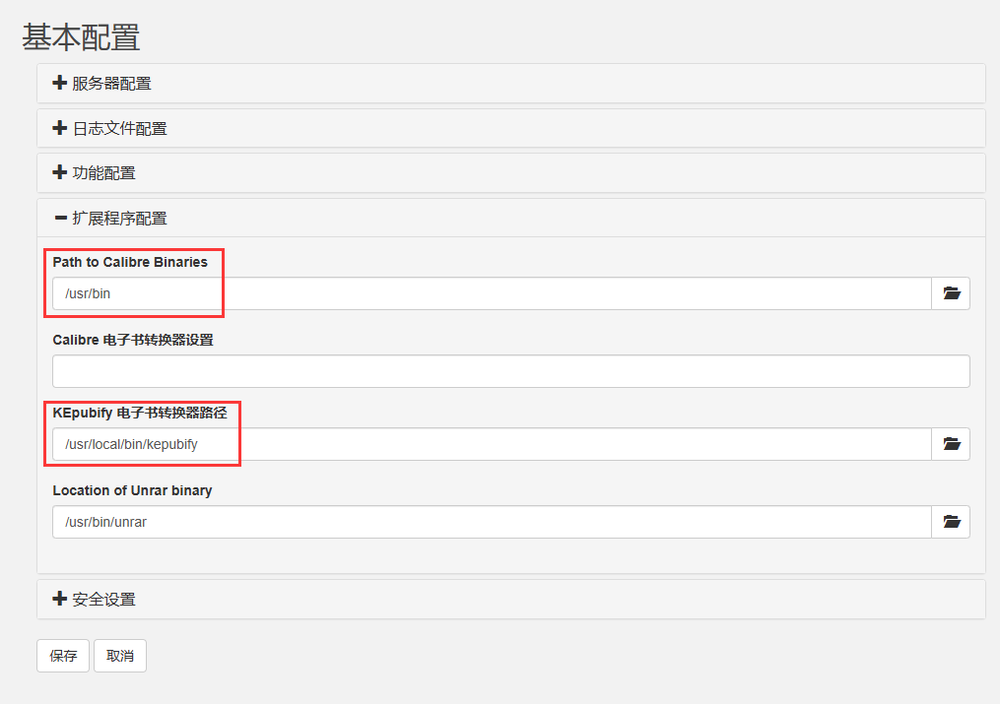

Version：Calibre Web 0.6.23

# 介绍
calibre-web 是基于著名开源电子书管理工具 calibre 的 calibre-server 内容服务器提供的接口，开发了 calibre 的 Web 端 calibre-web，并提供了 Docker 安装包，使得 calibre 和 calibre-web 实现本地图书管理和在线访问。
项目：https://github.com/janeczku/calibre-web
# 安装
为你的 calibre-web 存放创建数据和配置文件夹：
# $PATH 为你存储盘的路径 | ||
mkdir -p /<$PATH>/calibre/config /<$PATH>/calibre/book |
运行 Docker：
docker pull ghcr.io/gshang2017/calibre-web:latest | ||
docker run -d \ | ||
--name=calibre-web \ | ||
-e PUID=0 \ | ||
-e PGID=0 \ | ||
-e TZ=Asia/Shanghai \ | ||
-e DOCKER_MODS=linuxserver/calibre-web:calibre \ | ||
-p 8083:8083 \ | ||
-v /<$PATH>/calibre/config:/config \ | ||
-v /<$PATH>/calibre/library:/books \ | ||
--restart always \ | ||
ghcr.io/gshang2017/calibre-web |
# 使用
浏览器访问 http://localhost:8083 ，这时候默认使用英文，登录界面默认账号 admin ，密码 admin123 ：

# 数据库管理
登入后会看到 Database Configuration 提示，要求指定 calibre 数据库路径：

实际上就是要找 metadata.db 所在的位置，而在此步骤正确设置完成之前，其他任何操作均无法进行。
那么 metadata.db 所在何处？ metadata.db 是一个 calibre 客户端上的数据库，因此在 calibre-web 中并不存在，所以要么在电脑上安装了 calibre 的 PC 客户端上，在安装目录中找到 metadata.db 文件；要么就从 calibre-web 项目中下载一个默认的 metadata.db 文件；当然，最好还是选择第二种获取空白模板的比较好。
# 密码修改及语言配置
点击页面右上角 admin ，在 Password 中填入新的密码，然后点击 Language 选择你需要的语言，然后点击 Save ：

# 上传功能
点击页面右上角 管理权限 -> 编辑基本配置 -> 功能配置 -> 启用上传 -> 保存 ：

上面是开启整个上传功能，并且根据提示还需要确认用户上的上传功能，因此在 管理权限 -> 管理用户 中配置确认，为你所需的账号开启上传：

# 格式转换功能
点击页面右上角 管理权限 -> 编辑基本配置 -> 扩展程序配置 ，进行以下修改后点击 保存 ：
Calibre 电子书转换器路径： /usr/bin/
KEpubify 电子书转换器路径： /usr/local/bin/kepubify

这个配置是官方给的固定写法，所以不做解释，有兴趣的请翻阅官方文档：https://registry.hub.docker.com/r/linuxserver/calibre-web/
# 安可
关于 App 客户端，这里使用 “阅读” App：
主要功能：
- 自定义书源，自己设置规则，抓取网页数据，规则简单易懂，软件内有规则说明。
- 列表书架，网格书架自由切换。
- 书源规则支持搜索及发现，所有找书看书功能全部自定义，找书更方便。
- 订阅内容，可以订阅想看的任何内容，看你想看
- 支持替换净化，去除广告替换内容很方便。
- 支持本地 TXT、EPUB 阅读，手动浏览，智能扫描。
- 支持高度自定义阅读界面，切换字体、颜色、背景、行距、段距、加粗、简繁转换等。
- 支持多种翻页模式，覆盖、仿真、滑动、滚动等。
- 软件开源，持续优化，无广告。
然后搭配 webdav 服务，即可链接下载 calibre-web 服务端上面的书籍了。关于如何搭建 webdav 服务，可以参看：docker 部署之 webdav 文件服务 。